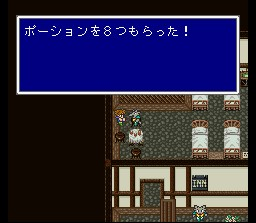
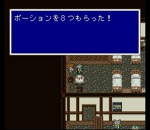
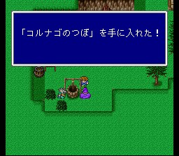

케루브
이제 별 볼일 없습니다. 빠뜨린 것을 체크하시고, 회복할 필요가 있는데 여관에서 케루브의 특식을 먹을 수 있는 기회가 남았다면 회복하고 갑시다. 새벽의 4전사 중 누군가에게 일이 생겼다면 케루가에게 소식을 전해 줍시다. 게임에 별 상관은 없습니다만..
도구상: 하이포션, 포션, 피닉스의 꼬리깃, 금바늘, 여인의 키스, 요술방망이,
안약, 해독제, 에텔, 성수, 코테이지, 거인의 약, 힘의 약, 스피드드링크, 프로테스드링크,
영웅의 약
무기상: 코다치, 킬러보우, 포이즌로드, 수리검, 불의 술, 물의 술,
번개의 술
방어구상: 골드실드, 골드헬름, 그린베레, 삼각모자, 골드아머, 미행의
옷, 대지의 옷, 건틀렛, 네지리하치마키, 힘의 옷, 파워리스트
마법상:
백, 흑, 시공마법 레벨 4